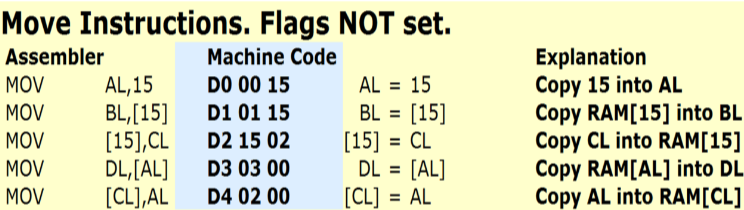

Make the demonstrators work.
Schedule on calendar
The CPU has four general-purpose registers called AL, BL, CL and DL. These are eight bits or one byte wide. Registers can hold unsigned numbers in the range 0 to +255 and signed numbers in the range −128 to +127. These are used as temporary storage locations. Registers are used in preference to RAM locations because it takes a relatively long time to transfer data between RAM and the CPU. Faster computers generally have more CPU registers or memory on the CPU chip.
The registers are named AL, BL, CL and DL because the 16-bit version of this CPU has more registers called AH, BH, CH and DH. The ‘L’ means Low and the ‘H’ means High. These are the low and high ends of the 16-bit register.
The special purpose registers in the CPU are called IP, SR and SP.
This register contains the address of the instruction being executed. When execution is complete, IP is increased to point to the next instruction. Jump instructions alter the value of IP so the program flow jumps to a new position. CALL and INT also change the value stored in IP. In the RAM displays, the instruction pointer is highlighted red with yellow text.
This register contains flags that report the CPU status.
The stack is an area of memory organised using the LIFO last in first out rule. The stack pointer points to the next free stack location. The simulator stack starts at address BF just below the RAM used for the video display. The stack grows towards address zero. Data is pushed onto the stack to save it for later use. Data is popped off the stack when needed. The stack pointer SP keeps track of where to push or pop data items. In the RAM displays, the stack pointer is highlighted blue with yellow text.
The simulator has 256 bytes of ram. The addresses are from 0 to 255 in decimal numbers or from [00] to [FF] in hexadecimal. RAM addresses are usually given in square brackets such as [7C] where 7C is a hexadecimal number. Read [7C] as “the data stored at location 7C”.
